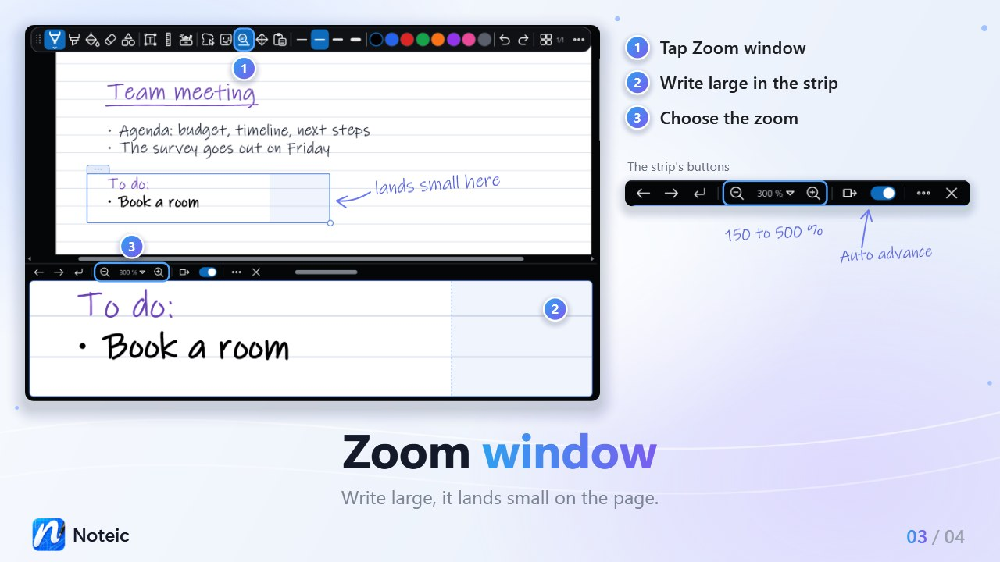

Zoom window New in 1.8
Write large in a strip at the bottom of the window, and your ink lands small in a frame on the page. Good for neat small writing, labels in a diagram or notes between the lines of a PDF.

Open and close#
- Tap Zoom window in the toolbar, next to Stickers.
- A strip opens at the bottom, and a blue frame shows on the page.
- Write in the strip. Your ink appears in the frame, smaller.
To close it, tap the × at the end of the strip's buttons, tap Zoom window again or press Esc.
Move the frame#
- Auto advance: when you pause at the right edge of the strip, the frame moves on, also to the next line and to the next page. It is on from the start; the switch is in the strip's buttons.
- Buttons: Back and Forward move the frame along the line, and New line starts the next line. Back at the start of a line goes to the line above.
- On the page: drag the tab of the frame, or tap the page with your finger where you want to write next.
- Mouse wheel over the strip: moves the frame line by line. With Shift it moves along the line, with Ctrl it changes the zoom.
The frame follows the lines of ruled and grid paper. Your view on the page follows the frame.
Zoom#
The strip writes at 300 % from the start. Change it with − and +, or tap the value and pick 150 to 500 %. You can also drag the corner of the frame on the page. Noteic remembers your choice.
More options#
The … button in the strip has two more settings:
- Line spacing, from 5 to 15 mm, for blank and PDF pages. Ruled and grid paper use their own lines.
- Buttons on the right, for left-handed writing, so your hand does not cover them.
To make the strip taller or shorter, drag the grip at its top edge.
What works in the strip#
In the strip you write with the pens, the highlighter and the eraser. With another tool, the strip says “Only pens, the highlighter and the eraser work here”.
- Hold for shape works in the strip as on the page, if it is on for your pen. The clean shape lands in the frame like your ink.
- Scribble to erase works too, if it is on.
Don't need the button? Move it into the drawer or turn it off under Customize the toolbar.